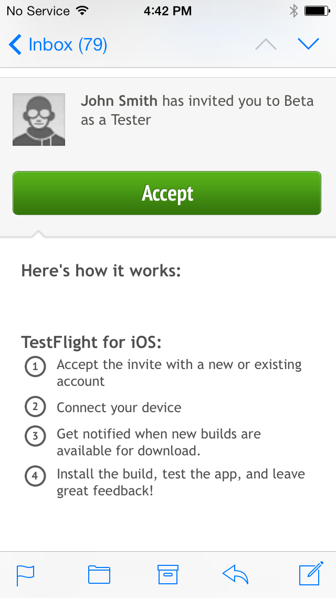
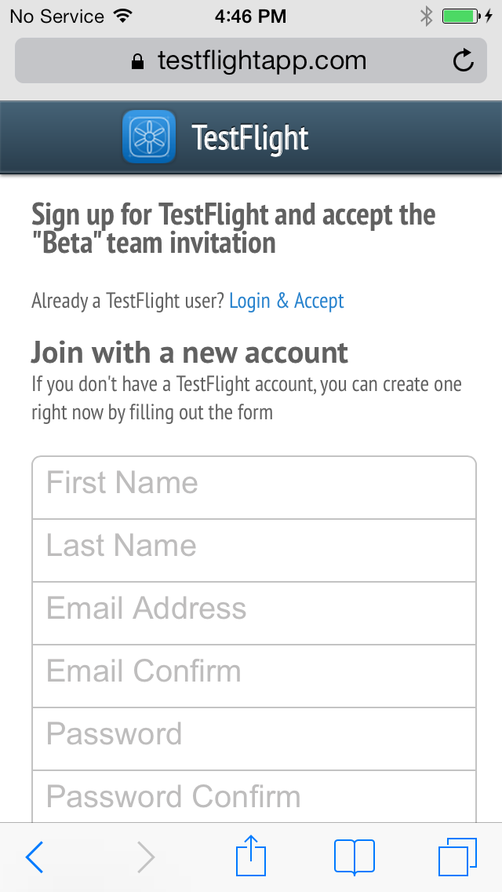
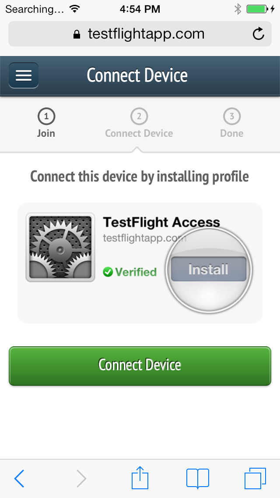
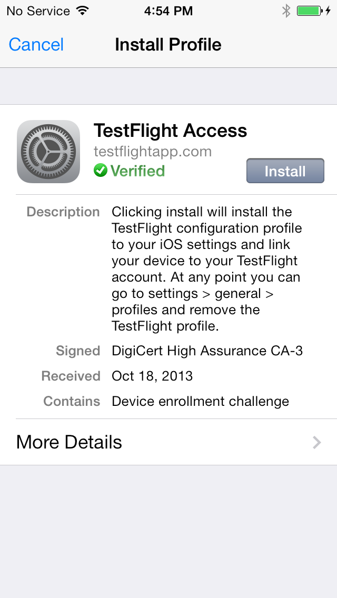
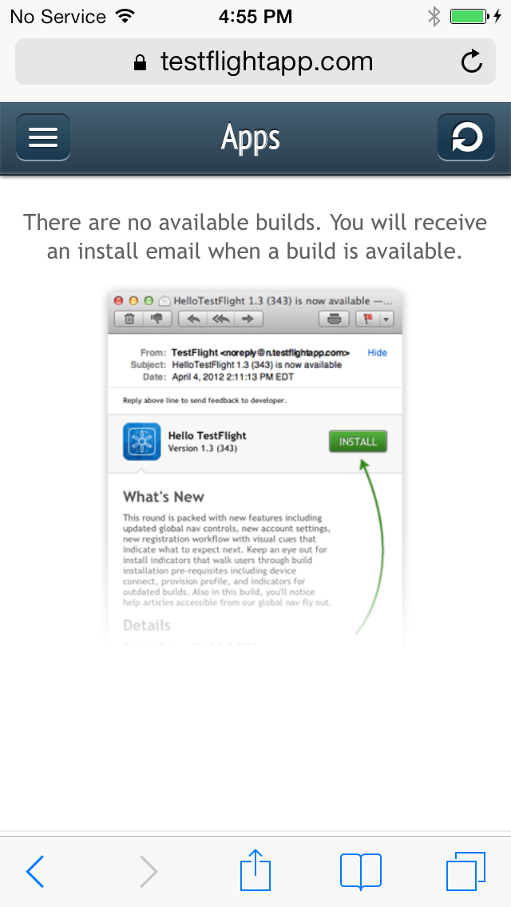
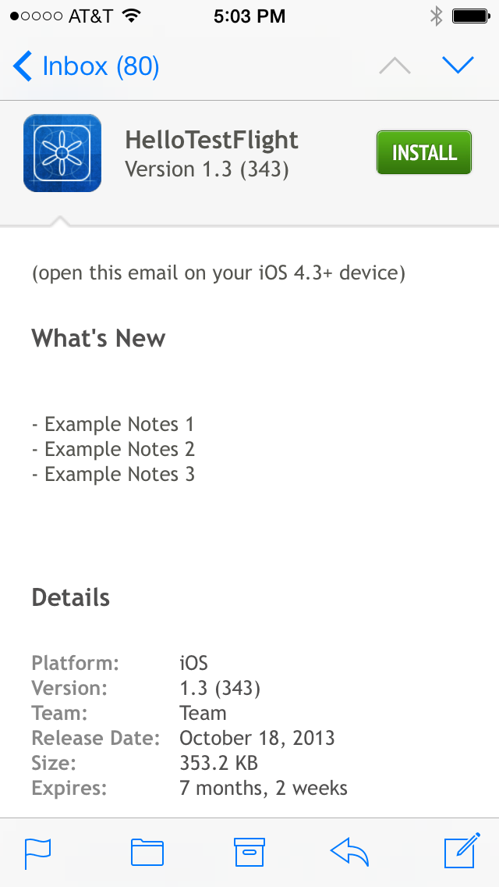
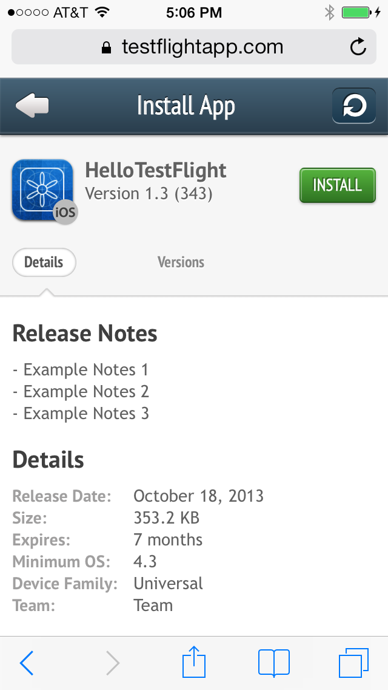
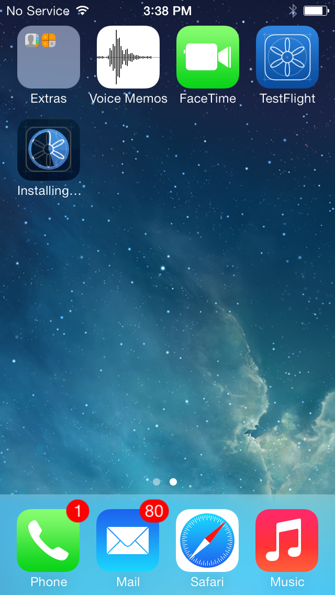

Please follow these instructions to particpate in our user test.
Please look out for an email with link to download testflight (to be used with these instructions).
On December 9th you will recieve a third email with a Switchat download button
To become a tester on TestFlight, you can simply register at TestFlightApp.com. You can also register as a new or existing user from a beta team invite or recruitment URL. To ensure that your device is properly connected to TestFlight, we recommend that you accept team invites or register new accounts from your mobile device. If you created an account on a computer, you will need to go to TestFlightApp.com on your device to complete the connection process. If you fail to connect your device, the app developer will be unable to permit your device for the beta test.
1. Open the team invite using the Mail app on your device and tap on the Accept button.
2. From here you can either create a new account with TestFlight or tap Login & Accept if you already have an account.
3. Congratulations! You are now a tester.
For iOS testers Tap the View Apps button to start the connection process with TestFlight. Once your device is connected, you will be able to view apps that are permitted for your device.
Once you sign up with TestFlight and login for the first time, you will be asked to connect your device, allowing developers to access the device's Unique Device Identifier (UDID) or have the ability to install Android apps on your device.
1. Tap the Connect Device button which will prompt you to install a configuration profile on your device.
2. Tap Install and a configuration profile will be installed on your device. This process sends your device's UDID to TestFlight and installs a bookmark (web clip) to your home screen for quick access to TestFlight.
3. After the device is connected, you will be redirected to the Apps page where you can access builds that are permitted for your device. If your device has not been permitted by the app developer, you will see a "No available builds" message.
1. Once you have successfully connected the device to your account and have been accepted into a team, the developer will need to permit your device for the app builds. You will receive an email notification through TestFlight when a build available to download.
2. You are now ready to install the build. You can either tap the Install button from the build notification email or you can open TestFlight on your device and tap the Install button from the Apps page
3. Once the app build is done installing, you can launch the app and begin beta testing!
